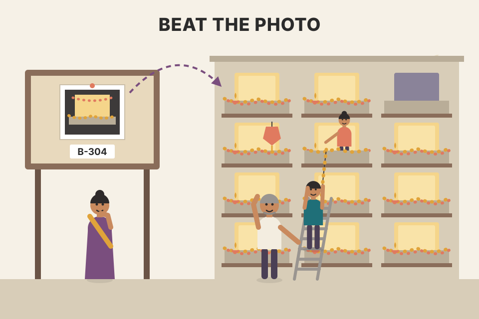
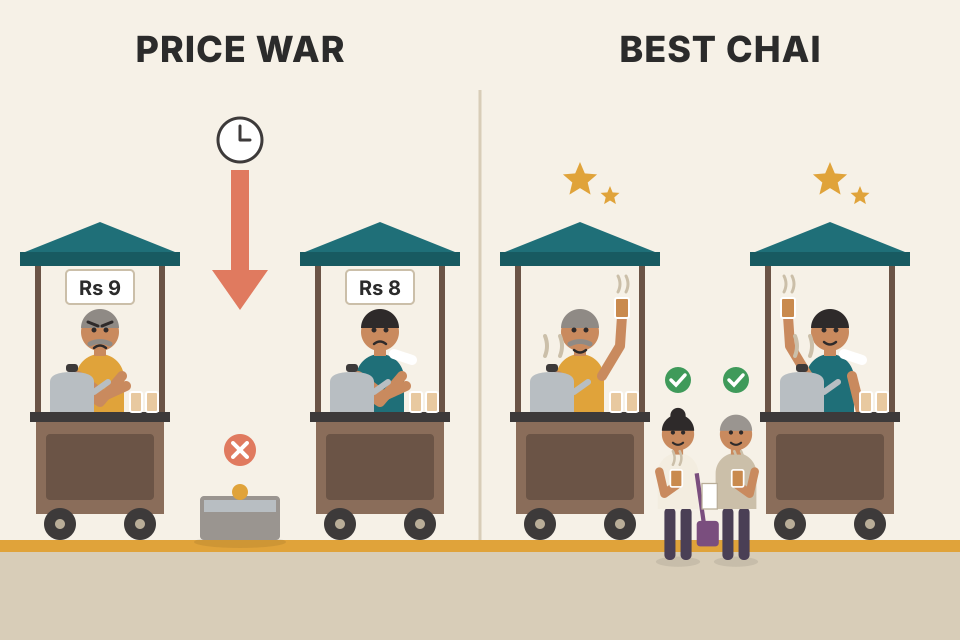
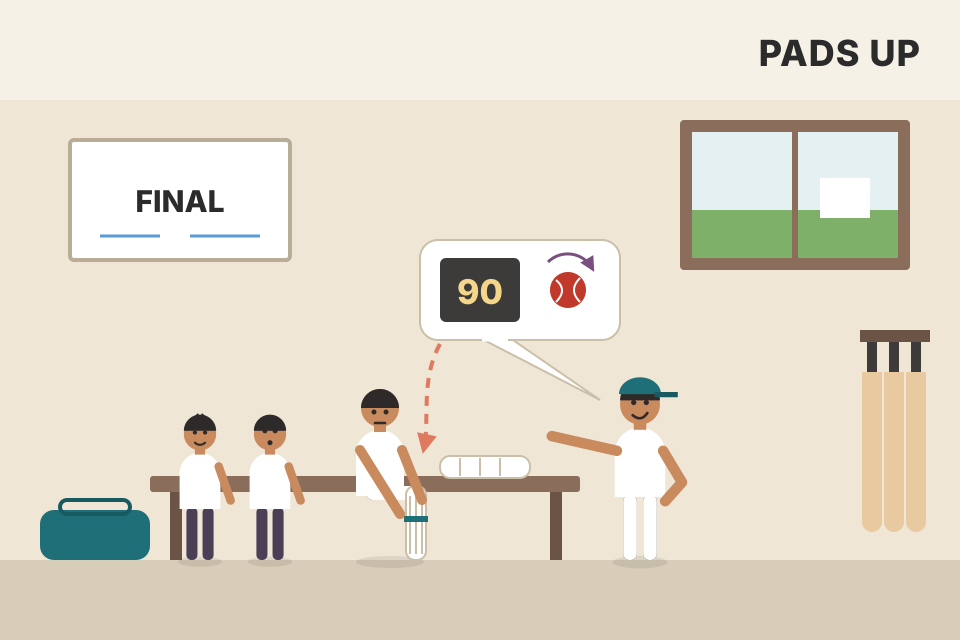
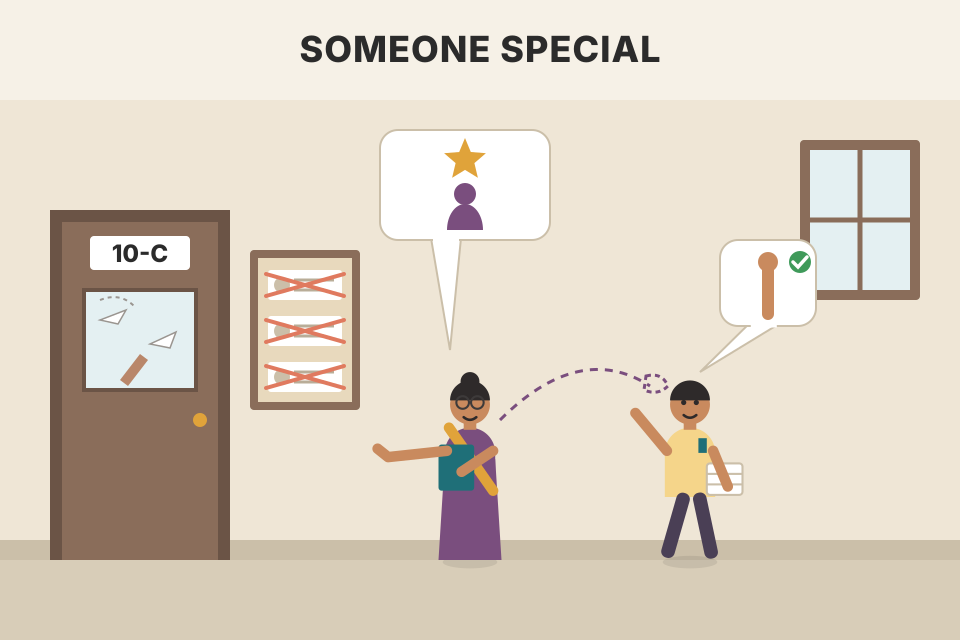
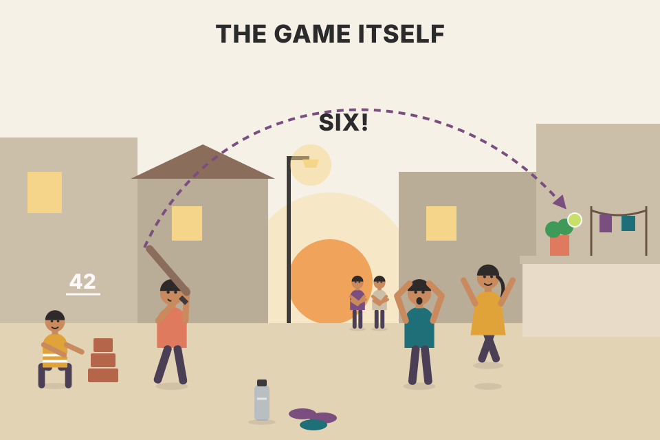
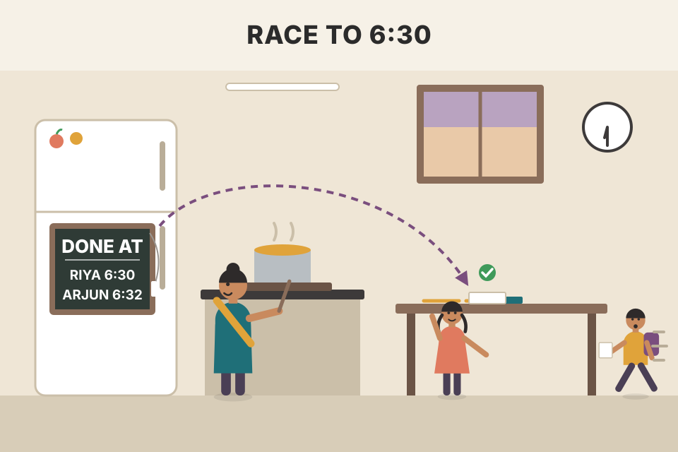
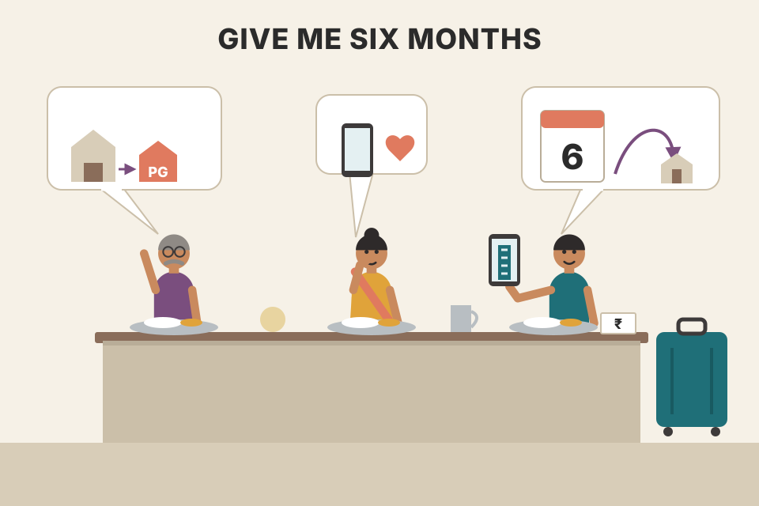

DALE CARNEGIE · HOW TO WIN FRIENDS · PART THREE · CHAPTER 12 · PDF p193–196
When Nothing Else Works, Try This
When coaxing, pushing and threatening have all failed, stop pushing and offer people a contest worth winning. The wish to excel, and to prove what you are worth, moves people further than pay or pressure.
The last chapter of Part Three is one of the shortest in the book, three pages, but its first story is one of the best known. A steel boss writes a single number in chalk on a mill floor, says nothing, and walks off. Within days two shifts are racing each other, and the slowest mill in the plant becomes the fastest. Carnegie then shows the same lever working on a frightened politician (Theodore Roosevelt) and on a reluctant prison warden (Lewis Lawes), and backs it with a tyre maker and a famous study of what motivates people at work. His conclusion: what people love is "the game", the chance to show what they can do. The chapter ends with the twelve principles of Part Three in one list, which this page links to every chapter.
Principle 12 of Part Three
Throw down a challenge.
How the chapter fits together
pdf p193–196 · read this first
Where it sits. This is the twelfth and last chapter of Part Three, "How to Win People to Your Way of Thinking", which began with Ch.10 "You Can't Win an Argument". Most of Part Three is about lowering resistance: avoid arguments, never say "you're wrong", admit your own errors, begin in a friendly way, let the other person talk and own the idea, see their side, appeal to nobler motives. The chapter just before this one, Ch.20, added showmanship: make the idea vivid. This chapter adds the last lever, for when gentle persuasion has run out: appeal to the wish to excel. After it comes the Part Three "In a Nutshell" list (plate 7), and then Part Four, "Be a Leader" (pdf p197 is just its title page), starting with Ch.22.
The title. "When nothing else works" is literal: the opening story starts with a manager who has tried coaxing, pushing, swearing and threats. The challenge is what Carnegie offers after all of those have failed.
The argument as a chain. Each row builds on the one before it.
Problema mill misses its quota→coaxing, pushing, threats all fail
The moveSchwab chalks "6" and walks away→7 · 10→best mill in the plant
Whycompetition, but not for money→the desire to excel
ProofPlatt dares Roosevelt to stay inAl Smith dares Lawes to take Sing Singthe Greek guard's motto on fear
BackingFirestone: pay alone doesn't hold peopleHerzberg: the work itself motivates most
Principlepeople love "the game": to prove their worth→Principle 12: throw down a challenge
Limitsa challenge, not a threata race to excel, not a fight for moneyworks for people "of spirit"
Wrap-upPart Three In a Nutshell: all 12 principles→Part Four: leading people
01 · THE OPENING STORY
Schwab's piece of chalk: a "6" that became a "10"
pdf p193–194
Carnegie opens with a manager who has run out of ideas, and a boss who fixes the problem without giving a single order.
Who. Charles Schwab, the steel executive Carnegie already praised in Ch.2 for his gift with people, had a mill whose workers were not meeting their production quota. (Beyond the book: Schwab was the first president of U.S. Steel and later ran Bethlehem Steel. A "heat" is one batch of steel melted and poured from a furnace, so "heats per shift" was the mill's output score.)
The situation. Schwab asked the mill manager how someone as capable as he was could not get the mill to produce what it should. The manager had no idea. He listed everything he had tried: he had coaxed the workers, pushed them, sworn at them, and threatened them with hell and with the sack. None of it had made any difference.
The move. It was the end of the day, just before the night shift took over. Schwab borrowed a piece of chalk, asked the nearest worker how many heats his shift had made that day (six), wrote a large "6" on the floor, and left without a word of explanation.
What happened next. The night shift arrived, saw the "6" and asked what it was. The day workers explained: the big boss had asked for their count and chalked it down. By the next morning the night shift had rubbed out the 6 and written a bigger 7. The day shift came in, saw the 7, and took it personally: the night crew thought they were better, did they? They worked with real energy and, at the end of their shift, left a huge, boastful 10 on the floor.
The outcome. Before long, the mill that had been lagging far behind was producing more than any other mill in the plant.
What Schwab did not do. He did not criticize the manager in front of the workers, did not give a speech, set a target, offer a bonus or threaten anyone. He made the score visible and let the two shifts compare themselves. Everything else came from the workers.
Dated wording. The book calls the workers "the men" throughout; mills then were almost all-male. Read it as "the crew" or "the team".
Step through the story
Picture it

In a housing society, the Diwali decoration competition used to be a chore nobody joined. One year the secretary simply pinned a photo of the best-lit balcony from last year on the notice board, with the flat number under it. No announcement, no prize. By the next Diwali half the building was out with ladders and fairy lights, each wing quietly determined to beat the photo.
Where it breaks: Diwali lights are a hobby people already enjoy. A steel mill is hard, hot, paid work, so the chalk worked on a crew that was already proud of its trade. If people hate the work or feel exploited, a scoreboard can feel like a speed-up trick rather than a contest.
What's happening behind it
From the book: Schwab's explanation (next plate) is that he stimulated competition, the wish of each shift to do better than the other. The number gave the shifts something to beat, and pride did the rest.
Beyond the book: three things helped. The number was public (everyone could see it), it was about the group, not a named individual, so nobody was shamed, and it gave a specific, beatable target. Goal-setting research (Edwin Locke and Gary Latham) finds that specific, challenging goals with clear feedback raise performance more than "do your best". Social-comparison theory (Leon Festinger, 1954) adds that people judge themselves by comparing with similar others, and two shifts doing the same job are the most similar others there are.
At work
Your team's flaky-test count has sat at 40 for months; reminders in stand-up do nothing. Instead of another reminder, put a small number on the team dashboard: "Flaky tests: 40". Do not attach blame or a deadline. People start chipping at it, someone posts "38" in the channel, and it becomes a small game. The same works for build time, p95 latency, or open review requests.
Careful: compare teams with themselves over time, or groups doing truly similar work. Ranking named individuals in public is a different thing (see "Where it can go wrong").
Interview angle. "Tell me about a time you improved a team's performance without authority." The Schwab shape is a strong answer: you made the problem visible with one honest number, people owned the improvement, and you can quote before and after figures.
Schwab's own explanation. Asked for the principle, Schwab said the way to get things done is to stimulate competition. He was careful to add what he did not mean: not a grubby race for money, but the wish to be better, to excel.
"to stimulate competition … in the desire to excel"Charles Schwab, as quoted by Carnegie (pdf p194)
Carnegie's gloss. The desire to excel, the challenge, "throwing down the gauntlet" (in old times a knight threw his glove on the ground to dare an opponent to fight). He calls it a sure way of appealing to "people of spirit": people with pride in themselves and something to prove.
Notice the two limits already built into the principle:
The prize is pride, not cash. Schwab explicitly rules out the money-grabbing kind of competition. The two shifts got nothing for the "10" except the satisfaction of beating the other crew.
It works on people of spirit. Carnegie does not claim everyone responds. Someone who feels beaten down or does not care about the work may just shrug at a number on the floor.
Which kind of competition? (Schwab's test)
Pick a response to see how Schwab's distinction judges it.
Picture it

Two neighbouring tea stalls at a railway station. If one owner starts undercutting the other by a rupee a cup, both end up poorer and angry: that is the "money-getting" kind of competition. If instead each tries to make the best masala chai on the platform, both get better, the commuters win, and each owner is proud of his cup.
Where it breaks: the tea stalls are rivals in business, so money is never fully out of the picture. Schwab's two shifts worked for the same company, so their contest had no loser in money terms. Inside one team, keep the contest about pride, never about who gets paid.
What's happening behind it
From the book: the desire to excel is a form of the desire to feel important, the deepest urge Carnegie describes in Ch.2. A challenge invites people to prove their importance through what they do.
Beyond the book: motivation research separates mastery goals (getting better than you were) from performance goals (beating others or looking good). Competition framed as "beat the other shift" sits between them; it stays healthy while the measure is real work and the rival is respected. Once money or status ride on the ranking, people start gaming the number.
At work
A hackathon with a trophy and a demo slot is Schwab's kind of competition; a bonus pool split by "lines of code shipped" is the sordid kind. The first makes people stretch and share; the second makes them pad PRs and hide work from each other. When you design any team contest, ask Schwab's question: is the reward the pride of excelling, or a scramble for money?
Appealing to nobler motives, which is a close cousin (pride in doing right rather than pride in doing well): Ch.19.
03 · A CHALLENGE THAT CHANGED HISTORY
"Is the hero of San Juan Hill a coward?"
pdf p194
Carnegie's second story moves from a factory floor to politics, and from a group to one frightened man.
Theodore Rooseveltjust back from Cubapicked to run for Governor of New Yorka residency problem
The situation. Theodore Roosevelt had just come home from the war in Cuba as a hero (the "Rough Rider" who led the charge at San Juan Hill), and was chosen to run for governor of New York State. His opponents then found that he was no longer legally a resident of the state. Roosevelt took fright and wanted to pull out.
The challenge. Thomas Collier Platt, then a U.S. Senator from New York and a powerful party boss, turned on him suddenly and, loudly, asked one question:
"Is the hero of San Juan Hill a coward?"Senator Thomas Platt to Roosevelt, as quoted by Carnegie (pdf p194)
The outcome. Roosevelt stayed in the race, and in Carnegie's words, the rest is history: the challenge changed his life and, through him, the country. Carnegie's claim is that without that challenge Roosevelt would never have become President. (Beyond the book: Roosevelt was elected governor in 1898, became Vice President in 1901, and President the same year after McKinley's assassination.)
Why it worked. Platt did not argue the legal point or reassure Roosevelt that the residency issue was small. He held up Roosevelt's own picture of himself (the brave hero) and asked whether he was going to live up to it. Quitting would now mean admitting he was a coward, which he could not bear.
The Greek motto. Carnegie adds a motto he attributes to the King's Guard of ancient Greece: everyone has fears, but the brave set them aside and go forward, sometimes to death, but always to victory. His question: what bigger challenge can you offer someone than the chance to overcome their fears? (Beyond the book: we could not trace a historical source for this motto; treat it as a saying, not a documented quote.)
Picture it

A college cricket team's best batsman pulls out of the final because he has been out of form for weeks. The captain does not list his past scores or tell him he will be fine. He just says, in front of the dressing room, "So the man who scored 90 in the semis is scared of their spinner?" The batsman pads up.
Where it breaks: a jab like this only works when the person truly has the ability and the respect of the group, and when the speaker has earned the right to say it. Said by a stranger, or to someone who is genuinely struggling (an injury, anxiety, a family crisis), it is just humiliation.
What's happening behind it
From the book: a challenge offers a person the chance to overcome their fears, and few things appeal more to people of spirit. Platt turned Roosevelt's fear of losing into a fear of looking like a coward, which was stronger.
Beyond the book: this is close to what psychologists call identity-based motivation (Daphna Oyserman) and self-consistency: people work hard to act in line with the identity they claim ("I'm brave", "I'm the person who ships"). It is also near the edge of a dare, which can push people into risks they would not choose calmly. Platt's question worked because Roosevelt's fear was out of proportion to the real problem.
At work
A strong senior engineer is about to turn down leading a messy migration because "it's not really my area". The respectful version of Platt's question: "You're the one who rebuilt the payments queue when everyone said it couldn't be done. I honestly don't think anyone else here could pull this off." You are not shaming them; you are reminding them of who they already are and leaving the choice with them.
Interview angle. "Tell me about a time you took on something outside your comfort zone." A good answer names the fear honestly, then what made you step up, which is often someone who challenged you. Credit them; it shows self-awareness.
Theodore Roosevelt also appears as a man genuinely interested in everyone he met (Ch.4) and who read up on his guests' interests the night before (Ch.8).
04 · A JOB NOBODY WANTED
Al Smith, Lewis Lawes and the warden's job at Sing Sing
pdf p194–195
The third story is the clearest example of the principle in one sentence: a governor turns a frightening job offer into a test of character.
Governor Al SmithSing Sing prison, no wardenone warden lasted 3 weeksLawes's book: hundreds of thousands sold
The problem. When Al Smith was governor of New York, Sing Sing prison had no warden. It was then the most notorious prison in America (Carnegie says the worst outside Devil's Island; Beyond the book: Devil's Island was France's infamous penal colony off French Guiana). Scandals and ugly rumours were running through it. Smith needed a strong, "iron" man to run it.
The first offer. He called in Lewis E. Lawes from New Hampton and, cheerfully, asked whether he would like to take charge of Sing Sing, since they needed someone experienced there.
The hesitation. Lawes was stunned. He knew how dangerous Sing Sing was. The post was a political appointment, at the mercy of shifting political moods. Wardens came and went; one had lasted just three weeks. He had a career to think about. Was it worth the risk?
The challenge. Smith saw him hesitate, leaned back, smiled, and changed his pitch completely. He told Lawes he did not blame him for being scared, admitted the post was hard, and said only someone big would last there.
"It'll take a big person to go up there and stay."Governor Al Smith to Lewis Lawes, as quoted by Carnegie (pdf p194)
The outcome. Lawes liked the idea of a job that needed someone "big". He went, and he stayed, becoming the most famous warden of his day. His book 20,000 Years in Sing Sing sold hundreds of thousands of copies; his radio broadcasts and prison stories inspired dozens of films; and his "humanizing" of prisoners did remarkable things for prison reform. (Beyond the book: Lawes ran Sing Sing from 1920 to 1941.)
Look at the two offers side by side. The first ("they need someone experienced") was about Sing Sing's needs, and it made Lawes think about the risks. The second ("it takes a big person") was about Lawes, and it made the risk the whole point: if the job were easy, it would not prove anything. Smith also did something smart before the challenge: he named and accepted the fear ("I don't blame you"), so Lawes did not have to defend it.
A link to Ch.1. This is the same Lewis Lawes whose letter Carnegie quoted in Ch.1: very few of Sing Sing's inmates think of themselves as bad. The man who learned that lesson about criminals got the job because someone understood his own pride.
Rewrite it: from a request to a challenge
Pick a flat request, think how you would turn it into a challenge (without a threat), then reveal a version and what changed.
Picture it

A school principal needs a teacher to take over the Class 10 section that has chewed through three class teachers in a year. "Would you take 10-C? We need someone experienced" gets a polite no. "I won't pretend it's easy; 10-C has beaten good teachers. It needs someone special, and I think that's you" gets a "let me try".
Where it breaks: the principal must back the teacher afterwards (support, time, authority). Smith's challenge worked partly because Lawes went on to be supported long enough to succeed. A challenge used to dump an impossible job on someone, then leave them alone, is a trap, and people learn to distrust the next one.
What's happening behind it
From the book: Lawes "liked the idea" of a job that needed someone big. The challenge spoke to his desire to excel and to feel important, and turned the danger from a reason to refuse into a reason to accept.
Beyond the book: this is reframing a threat as a challenge. Stress research (for example Jim Blascovich's work on challenge vs threat states) suggests people perform better when they see a demand as something they have the resources to meet, rather than something likely to harm them. Smith's sentence pushed Lawes from "this could ruin me" to "this could prove me".
At work
The legacy billing service has burned out two owners and nobody wants it. "Can you pick up billing? We need someone senior" sounds like a punishment. Smith's version: "Honestly, billing has beaten two good engineers, and I'd understand if you said no. It needs someone who can stay with a hard problem for a year. If anyone here can make it boring and reliable, it's you." Then back it with headcount and a clear mandate.
Interview angle. "Why did you take on that hard project?" A good answer shows you understood the risk and chose it for the chance to prove something, and what you did to stay (the "go up there and stay" part).
Worked example: the same ask, before and after
Request (or pressure)
"We need someone to be on-call lead for the next quarter. You've got the most context, so it should be you. Let me know by Friday."
Sounds like a chore assigned by default. The person weighs the cost and looks for a way out.
Challenge
"Our pager has gone off 30 times a week for a year. I don't blame anyone for not wanting this. It'll take someone who can actually get that number down, not just survive it. I think you could, and I'd back you with a sprint of time for fixes."
Names the fear, raises the bar, shows trust, offers support. The person can say yes for a reason of their own.
Connects to
Lawes's letter about inmates who never blame themselves: Ch.1.
Being sympathetic to the other person's fear first: Ch.18.
05 · THE EVIDENCE
Firestone, Herzberg and the work itself
pdf p195
After three stories, Carnegie brings in two witnesses to say the same thing from the world of business: pay is not what keeps good people working hard.
Harvey S. Firestone, founder of the Firestone Tire and Rubber Company, said he had never found that pay alone could either bring good people together or keep them. What did?
"I think it was the game itself."Harvey S. Firestone, as quoted by Carnegie (pdf p195)
Frederick Herzberg, a behavioural scientist (the book spells it "Frederic"), studied the work attitudes of thousands of people, from factory workers to senior executives. Carnegie poses it as a quiz: was the strongest motivator money? Good working conditions? Fringe benefits? None of them. The biggest motivator was the work itself. When the work was exciting and interesting, people looked forward to it and wanted to do it well.
Beyond the book: Herzberg's two-factor theory
Herzberg's study (The Motivation to Work, 1959, with Mausner and Snyderman) split job factors into two groups. Hygiene factors (pay, working conditions, company policy, supervision, benefits) cause dissatisfaction when they are bad, but making them good mostly just removes complaints. Motivators (achievement, recognition, the work itself, responsibility, growth) are what make people actually satisfied and driven. So Carnegie's summary is fair, with one caution: Herzberg did not say pay doesn't matter. Pay people badly and they leave; pay them well and you still need interesting work to get their best.
Self-audit: what is your team running on?
Tick what is true for the work your team does today. Nothing is saved.
Picture it

A street cricket team plays every evening until it is too dark to see the ball. Nobody is paid. The ground is a dusty lane, the stumps are bricks, and the "benefits" are a shared bottle of water. They come back every day for the game: the score, the rivalry with the next lane, the chance to hit a six over the neighbour's wall.
Where it breaks: street cricket is play, and the players can walk away any evening. A job has rent riding on it. "The game itself" only works on top of fair pay; it is not a reason to underpay people because they "love the work".
What's happening behind it
From the book: Firestone and Herzberg agree that interest in the work itself, not money or comfort, is what draws and holds good people. A challenge is one way to make the work interesting.
Beyond the book: self-determination theory (Edward Deci and Richard Ryan) explains why: people are driven by competence (getting good at something), autonomy (some choice in how) and relatedness (doing it with others). Daniel Pink's Drive (2009) popularised the same idea as mastery, autonomy and purpose. Deci's experiments also found that paying people for a task they already enjoy can lower their interest in it, which is one reason Schwab kept money out of the chalk contest.
At work
Engineers rarely quit a team because the salary is slightly below market; they quit because the work is dull, the problems are solved, or nobody notices what they do. Before offering a raise to keep someone, ask what problem would excite them: owning a hard migration, leading a design, cutting latency in half. And keep the hygiene side honest: on-call pay, sane hours, decent laptops. Bad hygiene drowns out any game.
Interview angle. "What motivates you?" Herzberg gives you a structured answer: name the work you find absorbing (the motivators), and show that you also care about the conditions that let a team sustain it.
Connects to
Arousing an eager want, the first form of this idea: Ch.3.
Making the work feel worth doing through praise and recognition: Part Four, Ch.6.
06 · THE PRINCIPLE
Everyone loves the game: Principle 12
pdf p195
Carnegie's close. What every successful person loves is the game: the chance to express themselves, to prove what they are worth, to excel, to win. That is why people hold footraces, hog-calling contests and pie-eating contests. Underneath them all is the desire to excel, which is a form of the desire for a feeling of importance.
Dated example. Hog-calling (shouting to call pigs in from a field) was a popular contest at American county fairs. Today's equivalents: a hackathon, a step-count challenge, a quiz night, a Kaggle leaderboard, the office cricket league.
Principle 12 of Part Three
Throw down a challenge.
Putting the chapter together. Each story shows a different kind of challenge:
Story
Kind of challenge
What was challenged
Outcome
Schwab's chalk
A visible score to beat
Group pride (shift vs shift)
Slowest mill became the most productive in the plant
Platt and Roosevelt
A question about courage
His identity as a hero
Stayed in; governor, later President
Smith and Lawes
"It takes a big person"
His wish to prove himself
Most famous warden of his time; prison reform
Firestone, Herzberg
The work itself as the game
Interest, self-expression
People drawn in and kept by the work, not pay alone
What a good challenge has (our reading of the stories):
A clear bar. A number ("6"), a role ("a big person"), an identity ("the hero of San Juan Hill").
A real chance to meet it. Each person had the skill; the challenge unlocked it.
The choice stays with them. Nobody was ordered. Schwab said nothing; Smith and Platt asked.
Pride as the reward, not money or fear.
Reflect, then reveal
Think of one thing you have been asking someone to do that still isn't happening (a teammate, a vendor, a family member). Write how you have asked so far. Nothing is saved.
Picture it

A mother wants her two children to finish their homework before dinner. Scolding hasn't worked for a month. One evening she puts a small chalkboard on the fridge with two names and the time each one finished. Nobody is told to beat anyone. By Thursday both are racing to the table at 6:30, comparing times.
Where it breaks: siblings of different ages and abilities are not two equal mill shifts. If one child always loses, the board becomes a daily humiliation. Compare each child with their own yesterday, or make it a joint target ("both done by 7 = Friday movie").
What's happening behind it
From the book: the game satisfies the desire to excel and the desire to feel important, two faces of the same need that runs through the whole book (Ch.2). A challenge is an invitation to satisfy it through good work.
Beyond the book: games work because they give clear goals, quick feedback and an optimal level of difficulty, the conditions Mihaly Csikszentmihalyi linked to flow. A good challenge creates the same conditions in ordinary work.
At work
A code-review backlog of 40 open PRs. Nagging in stand-up: ignored. A challenge: "Can we get open reviews under 10 by Friday? Last time we did it in four days." A specific bar, a past record to beat, and the team chooses how. Do not attach names to a leaderboard; keep it a team score.
Interview angle. "How do you motivate a team that's lost energy?" A good answer mentions making the work interesting (a hard, visible goal), not just perks, and shows you kept the contest healthy.
Connects to
The book's opening idea that people crave a feeling of importance: Ch.2.
Encouragement and making the fault seem easy to correct, the leader's follow-up to a challenge: Part Four, Ch.8.
07 · PART THREE IN A NUTSHELL
How to Win People to Your Way of Thinking: the twelve principles
pdf p195–196
The book closes each Part with an "In a Nutshell" list. Part Three's is the longest, twelve principles, one per chapter. Tap any of them to open its page.
How the twelve fit together (our reading; the book just lists them). They fall into four rough stages of a persuasion:
The thread through all twelve. Part Three never tells you to out-argue anyone. Every principle lowers the other person's need to defend their pride, then gives them a reason of their own to agree: their idea, their view respected, their better self, a vivid picture, a chance to excel. The challenge comes last for a reason: it is the strongest push, and it only lands once the resistance is gone.
Which principle? Part Three review
Pick the principle that fits best.
Picture it

Persuading your parents to let you move cities for a job. You don't argue with your father's worries (P1, P2), you admit you were careless with money last year (P3), you start over a relaxed Sunday lunch (P4) with things everyone agrees on: it's a good company, you'll call daily (P5). You let your mother talk through her fears (P6, P9), see it from their side (P8), let your father suggest the PG near your uncle's house (P7), appeal to their pride in raising someone independent (P10), show them the office photos and the salary slip (P11), and finally say, "Give me six months. If I can't manage, I'll come back" (P12).
Where it breaks: real conversations don't run in a neat order of twelve steps, and you rarely need all of them. The list is a toolkit, not a script; pick the two or three the moment calls for.
The earlier nutshells: Part One in Ch.3, Part Two in Ch.9. All chapters: the index.
08 · WRAP-UP
Summary and key terms
pdf p193–196
When nothing else works. Schwab's mill manager had coaxed, pushed, sworn at and threatened his workers; output still lagged.
The chalk. Schwab asked the day shift's count (six heats), chalked "6" on the floor and left. The night shift wrote 7; the day shift answered with 10. The lagging mill soon out-produced every other mill in the plant.
Schwab's principle. Stimulate competition: not a scramble for money, but the desire to excel. Carnegie: throwing down the gauntlet is a sure appeal to people of spirit.
Roosevelt. Back from Cuba and picked for governor, he wanted to quit over a residency problem until Senator Platt asked if the hero of San Juan Hill was a coward. He stayed in, and the challenge, Carnegie says, made him President.
The Greek motto. All people have fears; the brave go forward anyway. Few challenges beat the chance to overcome fear.
Lawes and Sing Sing. Al Smith's first offer scared Lawes off (a political post, one warden lasted three weeks). Then Smith said it would take a big person to go there and stay. Lawes went, stayed, became the most famous warden of his time, wrote 20,000 Years in Sing Sing, inspired films and drove prison reform.
The work itself. Firestone: pay alone never gathered or kept good people; the game did. Herzberg: across thousands of workers the top motivator was not money, conditions or benefits but the work itself.
The game. Everyone loves the chance to express themselves, prove their worth, excel and win: the desire for a feeling of importance. Principle 12: Throw down a challenge.
Part Three in a nutshell: avoid arguments; respect opinions, never say "you're wrong"; admit your errors fast; begin friendly; get "yes, yes"; let them talk; let them own the idea; see their view; be sympathetic; appeal to nobler motives; dramatize; throw down a challenge.
Term or phrase
Meaning on this page
Where
Principle 12
Throw down a challenge.
pdf p195
Heat
One batch of steel melted in a furnace; the mill's unit of output (beyond the book).
pdf p193
The chalked "6"
Making a score visible and letting people compete to beat it.
pdf p193
The desire to excel
Schwab's kind of competition: to be better, not to grab money.
pdf p194
Throwing down the gauntlet
Daring someone (from the knight's glove thrown down as a challenge).
pdf p194
People of spirit
Those with pride and something to prove: the ones a challenge reaches.
pdf p194
"It'll take a big person"
Al Smith turning a risky job into a test of character.
pdf p194
The game itself
Firestone's phrase for what gathers and holds good people.
pdf p195
The work itself
Herzberg's top motivator, ahead of pay and conditions.
pdf p195
Hygiene factors vs motivators
Herzberg's two-factor theory (beyond the book).
—
In a Nutshell (Part Three)
The twelve principles for winning people to your way of thinking.
pdf p195–196
09 · USE IT
Practice this week
beyond the book
Small exercises, each with a way to tell whether it worked. The exercises are ours; the ideas are the chapter's.
Chalk one number. Pick one stuck team metric (flaky tests, open reviews, build time) and put it somewhere everyone sees, with no blame and no target. Worked if: within a week someone mentions or improves it without being asked.
Turn one request into a challenge. Take a task you have asked for twice already and reframe it Smith-style: name the difficulty, accept the hesitation, say why this person could do it. Worked if: you get a yes, or at least a real conversation instead of silence.
Beat yesterday, not each other. For yourself, pick one personal number (focused hours, pages read, a run time) and try to beat last week's. Worked if: you notice you are looking forward to checking it.
Find the game in a dull task. Before a boring job, set a small bar: "this report in 40 minutes", "this bug fixed with a one-line change". Worked if: the task feels shorter than usual.
Ask the Herzberg question. In one 1:1, ask "what part of your work this month did you actually enjoy?" Worked if: you learn something that changes what you hand that person next.
Check the order. Before throwing down a challenge, check that the person isn't still smarting from an argument with you (Part Three's earlier principles first). Worked if: the challenge lands as respect, not a jab.
10 · LIMITS
Where it can go wrong
pdf p193–196 · plus beyond the book
The book's own caveats first.
Not a money scramble. Schwab draws the line himself: the competition he means is the desire to excel, not a sordid fight over money (pdf p194).
"When nothing else works." The title places this principle last. It follows eleven gentler ones; it is not the first tool you reach for.
People of spirit. Carnegie aims the challenge at people with pride and energy to spare. It is not presented as a cure for everyone.
A challenge, not a threat. The mill manager had already tried threats and failed; the challenge is the opposite move.
Beyond the book: our critique
Dares can push people into bad risks. Platt's question worked because Roosevelt's fear was out of proportion. The same "are you a coward?" can goad someone into a reckless decision, or into a job that harms their health. Challenge ability, never courage alone.
Leaderboards can turn toxic. Ranking named individuals (stack ranking, public sales boards) breeds hiding, sandbagging and sabotage. Compare teams with their own past, or groups doing truly equal work.
Goodhart's law. Once a number becomes the target, people start gaming it. The chalk "10" counted real heats of steel; "PRs merged" or "tickets closed" can be inflated without any real work. Pick a number that is hard to fake.
Rewards can crowd out interest. Attaching money to the game (Deci's experiments) can make people care less about the work itself, which is exactly what Schwab warned against.
Not on someone already drowning. A challenge to a burned-out or struggling person reads as pressure. Herzberg's hygiene factors (workload, support, fair pay) have to be fine first.
Quality and safety. A race for output in a steel mill, a hospital or a production deploy can trade away safety. Racing to "10 heats" is great until someone cuts a corner; add the guardrails before the contest.
Culture shapes the challenge. In many Indian teams, a public dare to an individual can cause loss of face, while a team target ("can our squad close this before the quarter?") feels natural. Shift vs shift worked because it was group pride.
The evidence is anecdote. Three famous success stories, two quotes, and one study summarised in a paragraph. Herzberg's method (asking people to recall good and bad times at work) has itself been criticised, and later research shows pay matters more than the two-factor theory implies for many people.
11 · TEST YOURSELF
Check yourself
pdf p193–196
Try to answer before opening each one. The first half is story recall; the second half is using the principle.
1. What had the mill manager already tried before Schwab stepped in?
Coaxing the workers, pushing them, swearing at them, and threatening them with hell and with the sack. None of it raised output.
2. What exactly did Schwab do, and what did he say to explain it?
He asked a day-shift worker how many heats they had made (six), chalked a big "6" on the floor and walked away without explaining. He said nothing more; the workers explained it to each other.
3. How did the numbers change, and what was the final result?
The night shift replaced the 6 with a 7; the next day shift left a 10. Soon the mill, which had been lagging far behind, was producing more than any other mill in the plant.
4. What kind of competition did Schwab say he meant, and what kind did he rule out?
The desire to excel. He ruled out a sordid, money-getting kind of competition.
5. Why did Roosevelt want to withdraw from the governor's race, and what kept him in?
His opponents found he was no longer a legal resident of New York, and he took fright. Senator Thomas Platt asked him, loudly, whether the hero of San Juan Hill was a coward. He stayed in.
6. Why did Lewis Lawes hesitate to run Sing Sing?
It was dangerous, it was a political appointment subject to political whims, wardens came and went (one lasted three weeks), and he had a career to consider.
7. How did Al Smith change his pitch, and what happened to Lawes afterwards?
He said he didn't blame Lawes for being scared, admitted the job was hard, and said only someone big would last there. Lawes went, stayed, became the most famous warden of his time, wrote 20,000 Years in Sing Sing (hundreds of thousands sold), inspired films with his broadcasts and stories, and advanced prison reform.
8. What did Firestone and Herzberg each say about pay?
Firestone: pay alone never brought together or held good people; it was the game itself. Herzberg: in studies of thousands of workers, from factory floor to executives, the top motivator was not money, conditions or fringe benefits, but the work itself.
9. Which deeper need does Carnegie say lies under the love of "the game"?
The desire to excel, and the desire for a feeling of importance (the need from Ch.2).
10. Application: your team's on-call alerts have doubled and reminders to fix noisy alerts are ignored. What is a Schwab-style move?
Make the number visible without blame, for example a weekly "pages this week: 62" on the team dashboard, perhaps alongside last week's. Let the team set out to beat it. Keep it a team score, not a ranking of individuals.
11. Application: is "Anyone who can't finish this by Friday probably isn't senior material" a good challenge?
No. It is a threat dressed as a challenge: it attacks status instead of offering a chance to prove it, and it uses fear, which is what the mill manager tried. A Smith-style version names the difficulty and shows trust: "This is a tough deadline; I think you're the one who can pull it off. What would you need?"
12. Application: you want a reluctant colleague to lead a hard project. Write a challenge the Al Smith way.
Something like: "I won't pretend this is easy; it's beaten two teams. I'd understand if you passed. But it needs someone who can stay with it and make it work, and I think that's you. I'll back you with time and people." Name the fear, raise the bar, show trust, offer support.
13. Why does it matter that this principle comes last in Part Three?
The title says "when nothing else works": the challenge is the strongest push, and it lands best after the earlier principles have removed the argument and the defensiveness. A challenge from someone who just humiliated you feels like a taunt.
14. Interview: "How do you keep a team motivated?" How does this chapter shape a good answer?
Lead with the work itself (hard, interesting goals and visible progress), mention a healthy challenge you set (team-level, a real measure, no money scramble), and show you kept the basics fair (Herzberg's hygiene factors). Give a before/after number if you have one.
15. Name the twelve principles of Part Three.
1 Avoid arguments. 2 Respect opinions; never say "you're wrong". 3 If wrong, admit it quickly and emphatically. 4 Begin in a friendly way. 5 Get "yes, yes" immediately. 6 Let them do most of the talking. 7 Let them feel the idea is theirs. 8 See their point of view. 9 Be sympathetic with their ideas and desires. 10 Appeal to nobler motives. 11 Dramatize your ideas. 12 Throw down a challenge.
12 · SOURCES
References
pdf p193–196
Book pages and other sources used on this page
Dale Carnegie, How to Win Friends and Influence People, revised edition (1981; Simon & Schuster 2009 printing), Part Three, Chapter 12, "When Nothing Else Works, Try This", pdf p193–195, plus the Part Three "In a Nutshell" list (pdf p195–196). Stories by page: Schwab and the chalked heats p193–194; Schwab on the desire to excel p194; Roosevelt and Platt p194; the King's Guard motto p194; Al Smith and Lewis Lawes p194–195; Firestone and Herzberg p195; the game and Principle 12 p195; In a Nutshell p195–196. Pdf p197 is the Part Four title page.
Beyond the book (named where used): F. Herzberg, B. Mausner, B. Snyderman, The Motivation to Work (1959); E. Locke and G. Latham on goal-setting; L. Festinger, social comparison theory (1954); E. Deci and R. Ryan, self-determination theory, and Deci's experiments on rewards and intrinsic motivation; D. Pink, Drive (2009); M. Csikszentmihalyi on flow; J. Blascovich on challenge and threat states; D. Oyserman on identity-based motivation; Goodhart's law; mastery vs performance goals in achievement-goal research.
Historical notes (Beyond the book): Charles M. Schwab at U.S. Steel and Bethlehem Steel; Theodore Roosevelt, governor of New York 1899–1900 (elected 1898), President from 1901; Lewis E. Lawes, warden of Sing Sing 1920–1941; Devil's Island, the French penal colony off French Guiana. We found no historical source for the "King's Guard" motto.